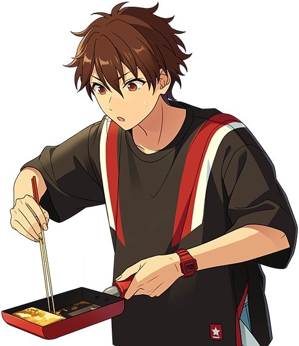

This page keeps track of random lore bits about AKARYUSEIbuki, updated and corrected over time.

He is currently learning how to cook; he can be seen buying ingredients to prepare seafood in his Stella Maris minitalks and has recently made edible (burnt) pancakes.
According to the Oshi Room filter system, he is the only one of AKARYUSEI who is listed as "proficient at a musical instrument."